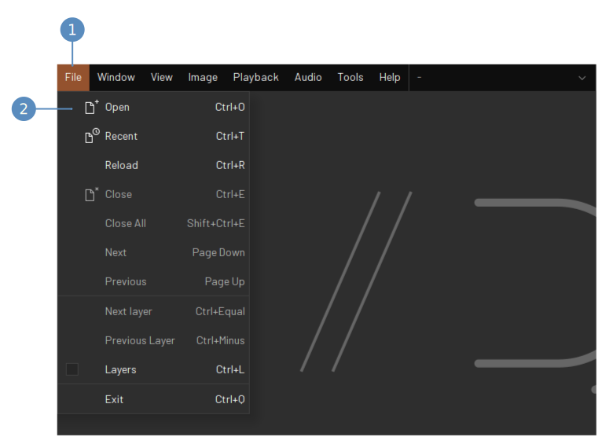
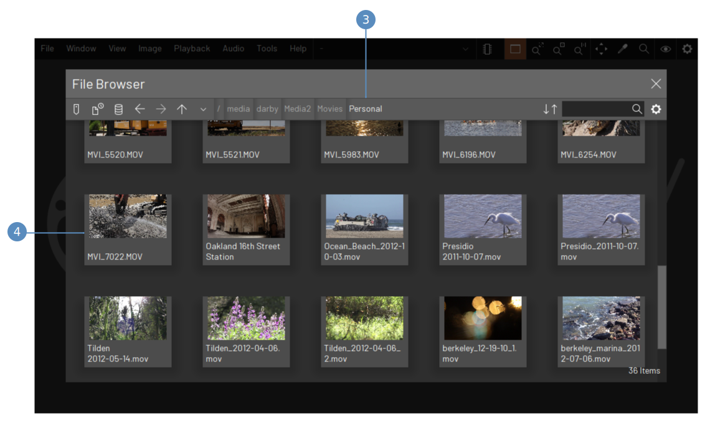
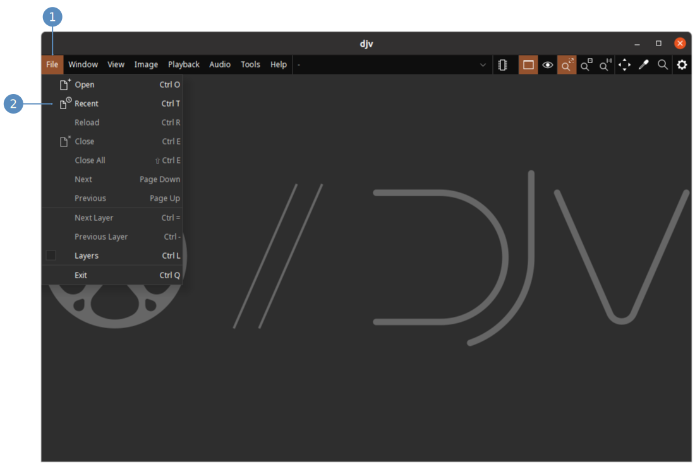
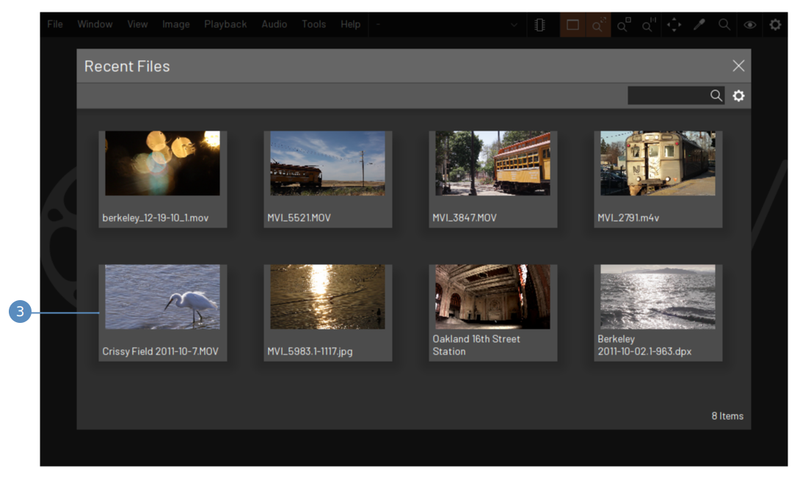

Open the file browser:
- Open the "File" menu
- Click the menu item "Open"

File browser controls:
- The current directory; click to edit the path
- Go up a directory
- Go back or forward a directory
- Shortcuts, recently used directories, and drives
- Sorting options
- Search for items in the directory
- Show the settings
- Click a file to open it

Open the recent files:
- Open the "File" menu
- Click the menu item "Recent"

Recent files controls:
- Click a file to open it
- Search for items
- Show the settings
